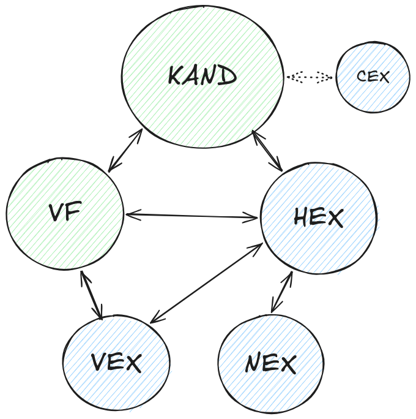

Prüfungskommission 21
<!-- .slide: class="title-layout" --> # Infoveranstaltung für Kandidaten/innen <div class="title-content"> Qualifikationsverfahren 2027<br>Entwickler/in digitales Business </div> --- <!-- .slide: class="content-layout" --> <p class="eyebrow">Vorstellung</p> ## Die wichtigsten Punkte im Überblick. <div class="slide-content"> <ul class="key-points"> <li class="fragment"><h3>10 Arbeitstage im Lehrbetrieb</h3><p>am Stück oder verteilt über maximal 2 Monate von Februar bis Mai</p></li> <li class="fragment"><h3>Übliches Projekt im Arbeitsumfeld</h3><p>formuliert durch die verantwortliche Fachkraft mit 6-7 Tage Realisierungs- und 3-4 Tage Dokumentationsaufwand</p></li> <li class="fragment"><h3>Begleitet durch Experten aus der Wirtschaft</h3><p>zwei Besuche bei der Umsetzung und einen für die Präsentation und das Fachgespräch</p></li> <li class="fragment"><h3>Weitere Informationen auf pk21.ch</h3><p>Handbuch, Bewertungskriterien und weitere Hinweise sind auf unserer Webseite zu finden und sind <strong>Pflichtlektüre!</strong></p></li> </ul> </div> --- <!-- .slide: class="content-layout" --> <p class="eyebrow">Vorstellung</p> ## Für Dich da, während Deines Qualifikationsverfahrens. <div class="slide-content"> <p class="lead">Die PK21 organisiert die <strong>Validierung und Durchführung der IPA</strong>, sowie das <strong>Ausstellen des EFZs</strong>.</p> <div class="people-list fragment"> <div> <strong>Vivienne Merz</strong>Präsidentin </div> <div> <strong>Claudia Bartholet</strong>Aktuarin </div> <div> <strong>Robin Bühler</strong>Chefexperte EDB </div> <div> <strong>Barbara Bisko</strong>Chefexpertin Validierung EDB </div> </div> </div> --- <!-- .slide: class="content-layout" --> <p class="eyebrow">Rollen</p> ## Wer was macht. <div class="slide-content"> <div class="image-text"> <div> <dl> <dt><strong>VF</strong> Verantwortliche Fachkraft</dt> <dd>Im Betrieb zuständig für die Begleitung der Kandidierenden.</dd> <dt><strong>HEX</strong> Hauptexperte</dt> <dd>Während der Durchführung verantwortlich von Seiten des Kantons.</dd> <dt><strong>CEX</strong> Chefexperte</dt> <dd>Ansprechsperson bei Konflikten und Notfällen.</dd> </dl> </div> <figure> <p></p> <figcaption>Diagramm: Rollen</figcaption> </figure> </div> </div> --- <!-- .slide: class="content-layout" --> <p class="eyebrow">Agenda</p> ## Was Dich erwartet. <div class="slide-content"> <div class="image-text"><!-- .element style="grid-template-columns: minmax(0, 2fr) minmax(0, 1fr);" --> <div> <ol class="agenda-list"> <li class="fragment"><h3>Vor der IPA</h3><p>Registrierung, Vorbereitung und Eingabe der IPA</p></li> <li class="fragment"><h3>Während der IPA</h3><p>Tägliche Arbeit, Besuche, Dokumentieren und Protokollieren</p></li> <li class="fragment"><h3>Nach der IPA</h3><p>Präsentation, Fachgespräch und Bewertung</p></li> <li class="fragment"><h3>Abschluss</h3><p>Fragen, Anliegen und Diskussion</p></li> </ol> </div> <figure> <figcaption>Photo von <a href="https://unsplash.com/@lorinboth?utm_source=unsplash&utm_medium=referral&utm_content=creditCopyText">Lorin Both</a> via <a href="https://unsplash.com/photos/a-clock-hanging-from-the-ceiling-of-a-building-GJ_3j24tT1w?utm_source=unsplash&utm_medium=referral&utm_content=creditCopyText">Unsplash</a></figcaption> </figure> </div> </div> --- <!-- .slide: class="title-layout section-layout" --> <span class="section-number" aria-hidden="true">01</span> <p class="eyebrow">Aufgaben</p> # Vor der IPA <div class="title-content"> Registrierung, Vorbereitung und Eingabe der IPA </div> --- <!-- .slide: class="content-layout" --> <p class="eyebrow">Ablauf</p> ## Die Schritte bis zum Start. <div class="slide-content"> <ol class="timeline"> <li><h3>Registrierung (ab 25.11.)</h3><p>Registrierung auf der Prüfungsplattform.</p></li> <li class="fragment"><h3>Eingabe (bis 31.12.)</h3><p>Grobbeschreibung und Startblock eingeben.</p></li> <li class="fragment"><h3>Validierung (ab 4 Wochen vor dem Start)</h3><p>Detaillierte Aufgabenstellung ausarbeiten.</p></li> <li class="fragment"><h3>Freigabe (bis ein paar Tage vor dem Start</h3><p>VEX gibt deine IPA zur Umsetzung frei.</p></li> </ol> <aside class="callout">Kommuniziere proaktiv und halte die Termine ein.</aside> </div> --- <!-- .slide: class="content-layout" --> <p class="eyebrow">Aufgaben</p> ## Was Du vor der IPA vorbereitest. <div class="slide-content icon-list"> <div class="icon-list-item fragment"> <div> <h3>Registrieren</h3> <p>Ab dem <strong>25. November</strong> kannst du <strong>Dich</strong> auf der Prüfungsplattform <a href="https://pkorg.ch">pkorg.ch</a> <strong>registrieren</strong> und Deine <strong>verantwortliche Fachkraft</strong> einladen</strong>.</p> </div> </div> <div class="icon-list-item fragment"> <div> <h3>Termine einhalten</h3> <p>Notiere dir die Termine und führe eine Aufgabenliste.Hast Du Deine verantwortliche Fachkraft für den <strong>18. November</strong> aufgeboten?</p> </div> </div> <div class="icon-list-item fragment"> <div> <h3>Dokumente lesen</h3> <p>Lerne die relevanten Dokumente kennen, wie das <strong>Handbuch</strong> und das <strong>Bewertungsformular</strong>, die du auf unserer Webseite findest.</p> </div> </div> <div class="icon-list-item fragment"> <div> <h3>Wissenslücken aufarbeiten</h3> <p>Welche <strong>Projektmethode</strong> passt? Verstehe ich alle <strong>Abläufe</strong>, die meine Abteilung betreffen? Habe ich die <strong>Tools</strong> im Griff?</p> </div> </div> <div class="icon-list-item fragment"> <div> <h3>Arbeitsumgebung vorbereiten</h3> <p>Richte deine Arbeitsumgebung für das Projekt ein. Organisiere dir die benötigten <strong>Zugänge</strong> und <strong>Dokumentvorlagen</strong>.</p> </div> </div> <div class="icon-list-item fragment"> <div> <h3>Austauschen</h3> <p>Tausche dich mit deiner verantwortlichen Fachkraft und deinem Team aus. Kläre offene Fragen und hole dir Feedback.</p> </div> </div> </div> --- <!-- .slide: class="content-layout" --> <p class="eyebrow">Aufgaben</p> ## Die Suche nach dem passenden Thema. <div class="slide-content"> <div class="two-cols"> <div> <h3>Zum Berufsbild passend</h3> <ul> <li>Daten analysieren</li> <li>Evaluation von Schnittstellen und deren Beteiligten</li> <li>Prozesse entwickeln, optimieren, vereinfachen und digitalisieren</li> <li>Schulungen entwickeln und durchführen</li> </ul> </div> <div class="fragment"> <h3>Zu Dir passend</h3> <ul> <li>Stärken und Bekanntes berücksichtigen</li> <li>Aufbauend auf bisherigen oder aktuell laufenden Projekten</li> <li>Etwas das für dich nicht komplett neu ist</li> <li>Etwas was deinen Berufsalltag identifiziert</li> </ul> </div> </div> <div class="fragment"> <h3>Was nicht passt</h3> <div class="two-cols"> <div> <ul> <li>Du formulierst die Aufgabe selber</li> <li>Fiktive Themen</li> <li>Unbekannte Produkte und Methoden</li> </ul> </div> <div> <ul> <li>Zu einfache oder komplexe Themen</li> <li>Dokumentation als Hauptfokus</li> </ul> </div> </div> </div> </div> --- <!-- .slide: class="title-layout section-layout" --> <span class="section-number" aria-hidden="true">02</span> <p class="eyebrow">Aufgaben</p> # Während der IPA <div class="title-content"> Tägliche Arbeit, Besuche, Dokumentieren und Protokollieren </div> --- <!-- .slide: class="content-layout" --> <p class="eyebrow">Ablauf</p> ## Die Schritte bis zur Abgabe. <div class="slide-content"> <ol class="timeline"> <li><h3>Beginn</h3><p>Zum Startzeitpunkt beginnst Du mit der Umsetzung und nicht früher.</p></li> <li class="fragment"><h3>Erstbesuch</h3><p>Der HEX und NEX besuchen dich zu einem vereinbarten Termin. Du stellst deine Planung und ersten Ergebnisse vor. Allfällige Fragen werden geklärt.</p></li> <li class="fragment"><h3>Zwischenbesuch</h3><p>Der HEX und NEX besuchen dich erneut, um den Fortschritt zu überprüfen. Du demonstrierst bisherige Ergebnisse.</p></li> <li class="fragment"><h3>Abgabe</h3><p>Du gibst deine Lieferobjekte fristgerecht <strong>am 10. Tag bis 18:00:00 Uhr</strong> auf PkOrg ab.</p></li> </ol> <aside class="callout">Organisiere die Besuchstermine mit allen Beteiligten frühzeitig. <strong>Du bist im Lead!</strong></aside> </div> --- <!-- .slide: class="content-layout" --> <p class="eyebrow">Aufgaben</p> ## Was Du während der Durchführung beachtest. <div class="slide-content icon-list"> <div class="icon-list-item fragment"> <div> <h3>Geplantes Vorgehen</h3> <p>Halte dich an das geplante Vorgehen und <strong>dokumentiere deine Fortschritte nachvollziehbar</strong>. Halte das Arbeitsjournal stets aktuell.</p> </div> </div> <div class="icon-list-item fragment"> <div> <h3>Melde Unregelmässigkeiten</h3> <p><strong>Melde Zwischenfälle</strong> wie fehlende Ressourcen oder Krankheit umgehend dem/der HEX. Im Vertrauen kontaktiere den CEX.</p> </div> </div> <div class="icon-list-item fragment"> <div> <h3>Bereite Besuchstermine vor</h3> <p>Bereite Dich auf die Besuchstermine vor, wie wenn du ein <strong>wichtiges Kundenmeeting</strong> hättest. Notiere dir die relevanten Punkte und Fragen im Voraus.</p> </div> </div> <div class="icon-list-item fragment"> <div> <h3>Fremdleistungen angeben</h3> <p>Gib alle Fremdleistungen korrekt an. Das betrifft Unterstützung von Arbeitskollegen und Korrekturlesenden, sowie generative Assistenzsysteme (wie z. B. ChatGPT).</p> </div> </div> <div class="icon-list-item fragment"> <div> <h3>Abgabe ausprobieren</h3> <p>Übe die Abgabe deiner Arbeit via PkOrg frühzeitig. Der letzte Upload zählt!</p> </div> </div> <div class="icon-list-item fragment"> <div> <h3>Handbuch und Kriterien beachten</h3> <p>Überprüfe regelmässig, ob du alle Vorgaben einhältst.</p> </div> </div> </div> --- <!-- .slide: class="content-layout" --> <p class="eyebrow">Generative Assistenzsysteme</p> ## Einsatz von generierten Inhalten <div class="slide-content"> <div class="image-text"> <div> <ul> <li>Generierte Inhalte und KI-Tools wie in der detaillierten Aufgabenstellung unter «Hilfsmittel und Methoden» beschrieben, dürfen verwendet werden.</li> <li>Generierte Inhalte müssen klar nachvollziehbar gekennzeichnet (Quellenverzeichnis, Fussnoten, ...) sein.</li> <li><strong>Nicht deklarierte und unreflektierte Nutzung von generierten Inhalten führt zu Punkteabzug.</strong></li> </ul> </div> <figure> <figcaption>Photo von <a href="https://unsplash.com/@jan_huber?utm_source=unsplash&utm_medium=referral&utm_content=creditCopyText">Jan Huber</a> via <a href="https://unsplash.com/photos/silhouette-of-trees-during-sunset-4MDXq_aqHY4?utm_source=unsplash&utm_medium=referral&utm_content=creditCopyText">Unsplash</a></figcaption> </figure> </div> </div> --- <!-- .slide: class="title-layout section-layout" --> <span class="section-number" aria-hidden="true">03</span> <p class="eyebrow">Aufgaben</p> # Nach der IPA <div class="title-content"> Präsentation, Fachgespräch und Bewertung </div> --- <!-- .slide: class="title-layout section-layout" --> <span class="section-number" aria-hidden="true">04</span> <p class="eyebrow">Aufgaben</p> # Abschluss <div class="title-content"> Fragen, Anliegen und Diskussion </div> --- <!-- .slide: class="title-layout closing-layout" --> # Deine Fragen?<br>Viel Erfolg im QV27! <div class="title-content"> <p>Wir freuen uns auf eine gute Zusammenarbeit.</p> <a class="contact-link" href="https://pk21.ch">pk21.ch</a> </div>